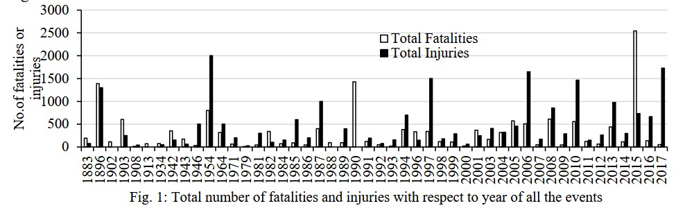
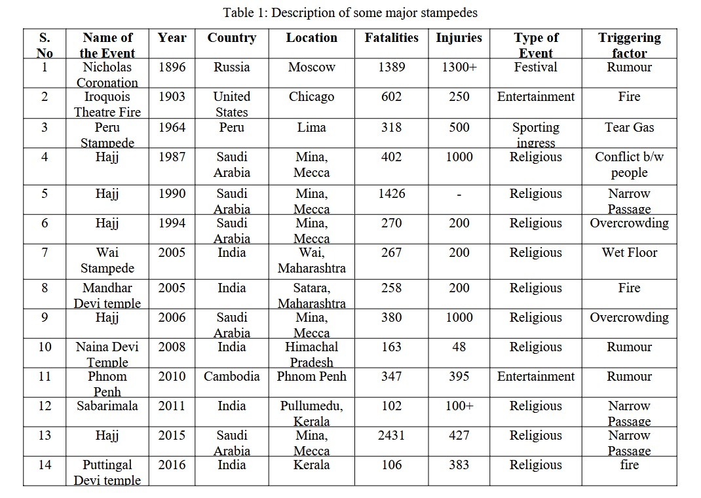
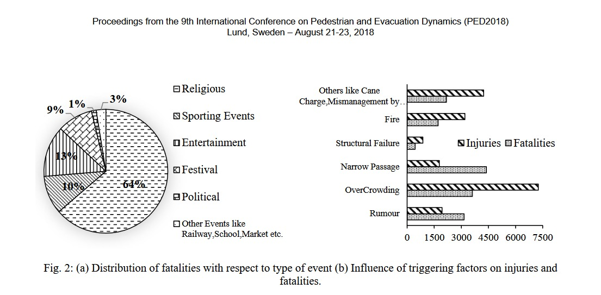

HATHRAS STAMPEDE, UP
LOCATION : HATHRAS SATSANG, Uttar Pradesh
Planned capacity: : 80 thousand
Actual turnout : 2.5 lakh
INFRASTRUCTURE Overview: Conducted in an open field near a highway; temporary tent structures with minimal barricading and limited medical support.
Entry and Exit Arrangements : Only one functional exit route; narrow mud pathways; vehicles and stalls obstructed movement; absence of clear signage and crowd guidance.
Casualties :121 fatalities and over 300 injuries.
LOCATION :IPL Victory Parade, Bengaluru (RCB Celebration)
Planned capacity:35,000
Actual turnout :200,000–300,000
INFRASTRUCTURE Overview : Parade route covered approximately 2.5 km² around M. Chinnaswamy Stadium; few barricades, inadequate buffer zones, and limited crowd-control personnel.
Entry and Exit Arrangements : Four narrow exits; absence of one-way circulation plan; uncontrolled crowd surge outside main gates; emergency corridors blocked by spectators.
Casualties : 11 fatalities and around 60 injuries.
LOCATION :Vijay Thalapathy Political Rally, Karur, Tamil Nadu
Planned capacity:60,000
Actual turnout :100,000–150,000
INFRASTRUCTURE Overview : Held on an open ground (10,000–12,000 m²) along the Karur–Erode highway; temporary fencing, central stage, and few emergency facilities.
Entry and Exit Arrangements : Two entry points and a single exit; narrow approach roads; crowd pressed toward stage; delayed emergency response due to traffic congestion.
Casualties :39–41 fatalities and over 100 injuries.
LOCATION :Maha Kumbh Mela, Prayagraj, Uttar Pradesh
Expected Pilgrims:300 million over two months
INFRASTRUCTURE Overview : Temporary fairground spanning ~4,000 hectares (≈ 40 km²); 25 sectors with tented accommodations, 400 km of roads, 20 pontoon bridges, 10,000 CCTV cameras, and AI-based crowd monitoring.
Entry and Exit Arrangements : Multiple approach roads and railway stations with color-coded zones; wider exits introduced after 2013 but dense convergence still expected during peak bathing days.
Casualties : 82 died and hundreds injured according to BBC reports
All events show huge mismatch between expected vs actual attendance. Single or narrow exit points triggered critical chokepoints. Lack of real-time crowd monitoring and segmentation worsened flow control. Emergency access delays occurred in every case due to poor route planning. Kumbh 2025 stands out for AI-based predictive systems, but even advanced infra faces scale-related risks.